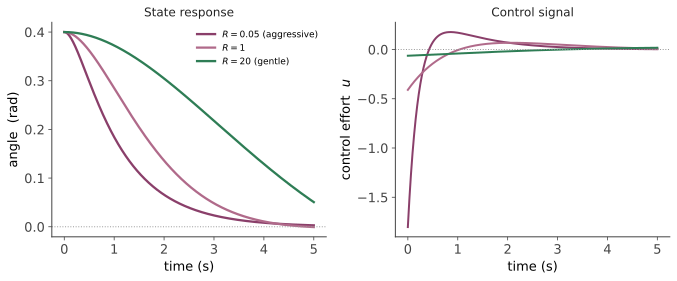

现代 II · 极点配置与 LQR
层次：本科核心 ｜ 🔗 前置：线性代数、二次型（数学站）。 上一页说"能控就能任意配置极点"。但该把极点放在哪里？ 任意配置给了自由，却没给判据——放得太左响应快但控制量巨大、易饱和。LQR（线性二次型调节器）用一个优化问题回答了这个问题，并附赠一个漂亮的鲁棒性保证。
一、状态反馈与极点配置
状态反馈：\(u = -Kx\)，闭环变为
定理：若 \((A,B)\) 能控，则通过选择 \(K\) 可以把 \(A-BK\) 的特征值配置到任意期望位置（复数需共轭成对）。
这是一个很强的结论——它说明能控性一旦满足，动态特性完全可以重塑。单输入情形可用 Ackermann 公式直接算出 \(K\)。
但问题随之而来：期望极点该选在哪？ - 放得太靠左 → 响应快，但所需控制量巨大（第三页：执行器会饱和），且高带宽会激发未建模的高频动态（第二页）； - 放得太靠右 → 慢； - 多输入系统的 \(K\) 不唯一，还有额外自由度不知如何使用。
极点配置给了工具，没给判据。这正是 LQR 要解决的。
二、LQR：把设计变成优化
不再直接指定极点，而是指定我们在意什么，让数学去找极点。定义二次型代价：
- \(Q \succeq 0\)：惩罚状态偏离（性能）；
- \(R \succ 0\)：惩罚控制量（能耗、执行器负担）。
最优解：\(u = -Kx\)，其中
\(P\) 是代数 Riccati 方程的正定解：
这个结果的意义：设计者不再直接猜极点，而是回答一个更有物理意义的问题——"我更在乎状态偏差还是控制代价？" 权衡通过 \(Q\) 与 \(R\) 的相对大小表达。
实用的整定直觉： - \(Q\) 变大 / \(R\) 变小 → 更激进，极点更靠左，控制量更大； - \(R\) 变大 → 更保守、更省力； - Bryson 准则（好用的起点）：把 \(Q\)、\(R\) 的对角元取为各变量最大可接受值平方的倒数——这使不同物理量纲的状态被公平地归一化，是实践中最常用的初始选择。

三、LQR 的保证与它的破灭
好消息：LQR 闭环有极好的鲁棒性质（单输入情形）——增益裕度为 \([1/2, \infty)\)，相位裕度至少 60°。无论怎么选 \(Q\)、\(R\)，这些裕度都成立。 这是一个了不起的保证：优化设计自动带来了良好的稳定裕度。
坏消息，也是控制史上重要的一课：LQR 需要全部状态可测。实际中状态往往测不全，于是用观测器/卡尔曼滤波器估计（下一页），组合成 LQG（线性二次高斯）控制器。
Doyle 在 1978 年给出了一个著名的反例：LQG 的鲁棒裕度可以任意小——即使 LQR 部分与卡尔曼部分各自都很鲁棒，组合起来可以完全没有保证。
这个结果的冲击力：它说明"分别设计最优的部分，组合起来未必好"，直接动摇了当时对现代控制的乐观预期，并直接催生了 \(H_\infty\) 与鲁棒控制理论（第十六页）。
教训（超出控制学科的普适性）：最优性不蕴含鲁棒性。 一个针对标称模型优化到极致的设计，可能对模型误差异常脆弱——因为优化会把所有余量榨干。这与机器学习中"过拟合"的直觉是同构的。
四、跟踪与积分作用
LQR 是调节器（把状态推向零）。要跟踪非零设定值，需要扩展：
- 前馈 + 状态反馈：\(u = -Kx + K_r r\)，计算稳态所需的前馈量。依赖模型精度，有静差；
- 积分增广：把积分状态 \(x_i = \int (r-y)dt\) 加入状态向量，对增广系统做 LQR。这样得到的控制器天然包含积分作用，可消除静差——即所谓 LQI。这是工程上的标准做法，也再次印证第一页的内模原理。
五、LQR 与经典方法的关系
它们不是对立的： - LQR 的闭环极点位置可以画出来，与根轨迹的直觉一致； - LQR 的回路传递函数满足Kalman 等式，由此可导出上面的裕度保证——这是频域与最优控制的接口； - 对单输入单输出系统，精心整定的 PID 与 LQR 的性能往往相差不大——LQR 的优势主要在 MIMO 与系统化的权衡表达。
工业现实：LQR 在航空航天、机器人、精密运动控制中确有应用（这些领域有好模型、多变量、且值得投入建模成本）。但在过程工业，PID 仍占主导，高级方法的位置主要由 MPC 占据（第十七页）——因为 MPC 能处理约束，而 LQR 不能。
六、LQR 的局限
| 局限 | 说明 |
|---|---|
| 无法处理约束 | 执行器饱和、状态限制无法显式表达。这是它输给 MPC 的关键（第十七页） |
| 需要全状态 | 实际需配观测器，进而可能失去鲁棒保证（§3） |
| 需要模型 | 模型误差直接影响性能 |
| 二次型代价未必贴合真实目标 | 真实目标可能是"不超过某个温度"而非"平方误差最小" |
| 只对线性系统严格 | 非线性需线性化或用 iLQR/DDP 等扩展 |
七、要点
- 能控 ⟹ 极点可任意配置，但"放哪里"需要判据；
- LQR 把设计转化为权衡的表达（\(Q\) 与 \(R\)），由 Riccati 方程给出最优增益；
- LQR 有优良的裕度保证，但 LQG 可能完全没有（Doyle 反例）——最优性不蕴含鲁棒性；
- 积分增广（LQI）是消除静差的标准做法；
- LQR 的致命短板是不能处理约束——这一条把我们推向 MPC。
下一页：LQR 需要全部状态，而实际只能测到一部分。观测器与卡尔曼滤波——如何从含噪的、不完整的测量中重建系统的内部状态。